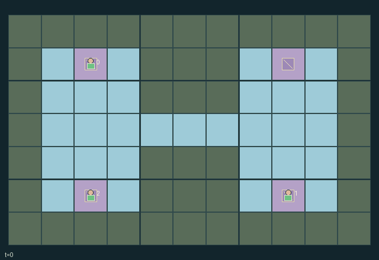

GI097 · Lockwake Convoys

Transport three physical cargo contracts through a shared narrow canal. Each contract owner receives its own outcome while every role also shares part of every delivery or loss.
Identity and original contract
3 independently actionable roles; 9 discrete commands per role; 155 native observation columns per role; original horizon 80 steps. Declared per-step reward range: -2 to 2. Observation regime: fully_observable.
Source SHA-256: e079e07b06792718a4201360563bca1e92b24fc4be75d9f6899be8787072c89f
The objective, rewards, population, map and horizon remain original. A preview is not a success claim.
Objective and gameplay
Transport three physical cargo contracts through a shared narrow canal. Each contract owner receives its own outcome while every role also shares part of every delivery or loss.
Momentum persists under coast; turning while moving first reduces speed. Cell reservations block head-on passage and swaps. An empty tug can tow a laden follower at speed two while paying extra fuel; either partner can brake or release. Collisions damage carried cargo and can permanently remove future delivery opportunities.
- Throttle spends one fuel. From rest it chooses a heading; repeating the heading accelerates, while a different heading first slows the boat.
- Coast preserves momentum. Brake stops immediately. A laden solo boat or laden tug is capped at speed one.
- Two adjacent stopped boats choosing tow form a tether; the lower-index boat leads. An empty tug can move a laden follower at speed two.
- Towing spends one extra tug fuel per moving tick. Either member's brake stops both; release breaks the tether.
- Each cell crossing uses actual reservations. Following a vacated tile is allowed, same-target conflicts and swaps are blocked, and blockage propagates through a tether.
- Cargo interaction requires being initially stopped. Deliver at the matching destination; elsewhere it drops held cargo or picks up grounded cargo.
- A collision adds one damage to carried cargo per tick. Three damage loses cargo. Owners get +/-1; all roles also get +/-0.25 per outcome; colliding roles lose 0.125.
- Waiting while initially stopped at a dock restores one fuel. All cargo resolved ends play. No script success has been measured.
Ending: All three cargo items are delivered or lost, otherwise horizon 80. Natural completion takes priority at the horizon.
Action timing: Every integer command in [0,U) is legal for every role before joint termination. Geometrically blocked or unavailable operations are deterministic failed attempts. Out-of-range commands become action 0. In absorbing states only action 0 is legal; raw_step ignores all supplied actions and preserves terminal state.
What this game explores
Commitment, exchange & governance: Promises consume time, liquidity, access or material. Separate an announced agreement from a binding commitment and from its eventual delivery; log cancellation and expiry too.
Joint transport & shared access: Positions, load geometry, occupancy and persistent access constrain whose action can succeed next. Distinguish physical handoff, shared controls and simultaneous force from a cosmetic cooperation label.
Survival, protection & rescue: Protection and repair alter another role's future feasible actions. Record losses, exposure, rescue and infrastructure as well as delivery; survival is determined by the actual kernel.
These are questions supported by rule structure, not observed learning effects.
Play it: operating walkthrough
crucibles play --game gi097Keep Python running and open its printed address. Select this game, set a seed and press Create session. The game itself is always English.
Assign a role range to Host with Assign / take over, or Assign all roles. Invite a second participant with Create player invitation, then assign a disjoint subset. Every original role is available.
For every owned role choose a legal command and press Queue. Arrow keys / WASD queue a declared directional action for the current role camera when available. Space or Advance one joint step advances everyone together. Non-directional games use the selectors.
Unqueued roles use the labelled untrained uniform-legal policy. Take over or release roles before the next step without resetting. Full-state debug is privileged and permanently logged; role cameras preserve permissions. Close the session to retain logs. Server restart does not restore sessions.
Complete command reference
IDs and English labels exactly match the manifest. Availability depends on role, resources, location and phase. An available action can still have no productive effect.
0·Coast; refuel if initially stopped at a dock
1·Throttle north
2·Throttle east
3·Throttle south
4·Throttle west
5·Emergency brake; also stops tether partner
6·Load, drop or deliver cargo while initially stopped
7·Consent to an adjacent stopped tow pairing
8·Release own tether
Roles and capability identifiers
These original role names describe capabilities, not interchangeable skins. Check each owned role's legal selector before planning handoffs.
agent_0·Northwest skipper; cargo contract owner 0
agent_1·East skipper; cargo contract owner 1
agent_2·Southwest skipper; cargo contract owner 2
Information and observation permissions
All boats, committed headings, speeds, fuel, tethers, cargo and destinations are public. Flat observations repeat the complete public state and append an own-role one-hot. Every active entity is visible to each role, fixed map is public, and resolved cargo retains public final status/position in the observation.
The GIF is full-state debug and may reveal hidden entities or private state. Train on obs[agent], not the picture, state tree or another role's private row. Field slices and visibility are in the original manifest.
Reinforcement-learning integration
import jax
from crucibles_jaxmarl import make
env = make("gi097")
key = jax.random.PRNGKey(0)
key, rk, ak, sk = jax.random.split(key, 4)
obs, state = jax.jit(env.reset)(rk)
actions = env.sample_actions(ak, state)
obs, state, rewards, dones, info = jax.jit(env.step_env)(sk, state, actions)
done = dones["__all__"]Observations are float32 vectors of width 155; actions are scalar int32; masks have 9 entries. Supply all 3 roles each transition. Masked sampling is an engineering reference, not a trained learner.
step_env retains terminal data without reset. step performs outer autoreset and keeps terminal data in info["raw_state"] and info["raw_observation"]. Use dones["__all__"] for episode boundaries; separate completion, failure and time limit in analysis.
JIT or vmap equal identities and shapes. Split independent reset, policy and transition keys. Group different shapes explicitly; do not shrink the population or horizon. Host rendering stays outside training.
Training questions and fair evaluation
Define valid completion from the objective before fitting. Preserve original rewards and also report real deliveries/services, losses, resource state, unresolved episodes and per-role returns. Animation is not a reward signal.
Promises consume time, liquidity, access or material. Separate an announced agreement from a binding commitment and from its eventual delivery; log cancellation and expiry too.
Positions, load geometry, occupancy and persistent access constrain whose action can succeed next. Distinguish physical handoff, shared controls and simultaneous force from a cosmetic cooperation label.
Protection and repair alter another role's future feasible actions. Record losses, exposure, rescue and infrastructure as well as delivery; survival is determined by the actual kernel.
Compare memory, communication or centralized critics under matched actor information. Declare critic access; keep actor inputs role-filtered. Match partner/opponent distributions, masks, compute and checkpoint selection. Final tests never enter fitting or selection.
Independent training runs or source-pairing blocks are inferential units; episodes from one policy are not independent training replications. Save hashes, keys, versions, device, time and cost. Negative, zero, failed and indeterminate outcomes are valid. No trained checkpoint or target score is supplied.
Classification and evidence
Overlapping editorial labels are reading aids, not proof of novelty, difficulty, strategic equivalence or learning effects.
- Commitment, exchange & governance
- Evidence
manifest.task.objective: Transport three physical cargo contracts through a shared narrow canal. Each contract owner receives its own outcome while every role also shares part of every delivery or loss.
- Evidence
manifest.actions.7: Consent to an adjacent stopped tow pairing
- Evidence
manifest.actions.8: Release own tether
- Joint transport & shared access
- Evidence
manifest.task.objective: Transport three physical cargo contracts through a shared narrow canal. Each contract owner receives its own outcome while every role also shares part of every delivery or loss.
- Evidence
manifest.actions.5: Emergency brake; also stops tether partner
- Evidence
manifest.actions.6: Load, drop or deliver cargo while initially stopped
- Survival, protection & rescue
- Evidence
scene.rules.6: A collision adds one damage to carried cargo per tick. Three damage loses cargo. Owners get +/-1; all roles also get +/-0.25 per outcome; colliding roles lose 0.125.
Source, receipts and preview limits
The world-only English GIF replays saved untrained legal actions through the original kernel. At most 25 actual endpoints include initial and terminal state; no invented interpolation. It is full-state debug, not the role observation.
Original source, observation slices, manifest and mechanism
Native receipt · Presentation receipt
Engineering passes do not establish learning. Nonzero floating differences remain recorded and undetermined; no new tolerance was introduced. Human scores remain unverified.